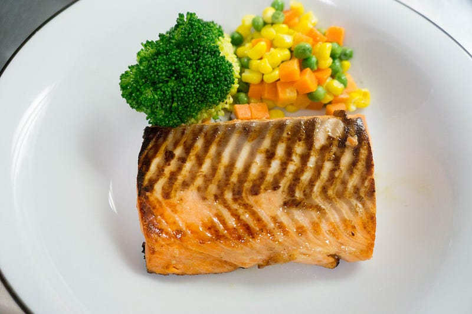
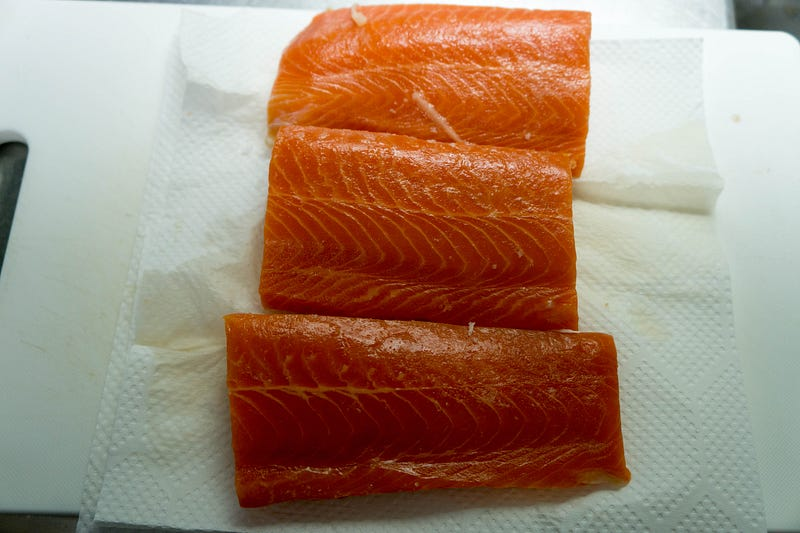
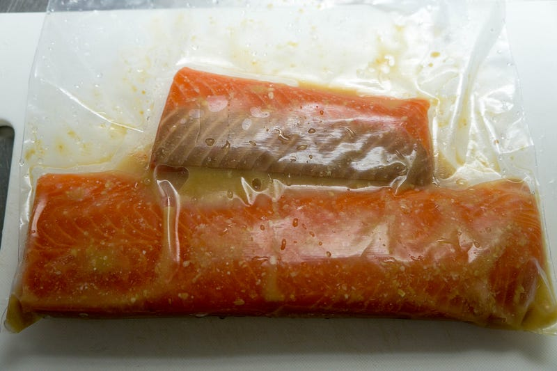
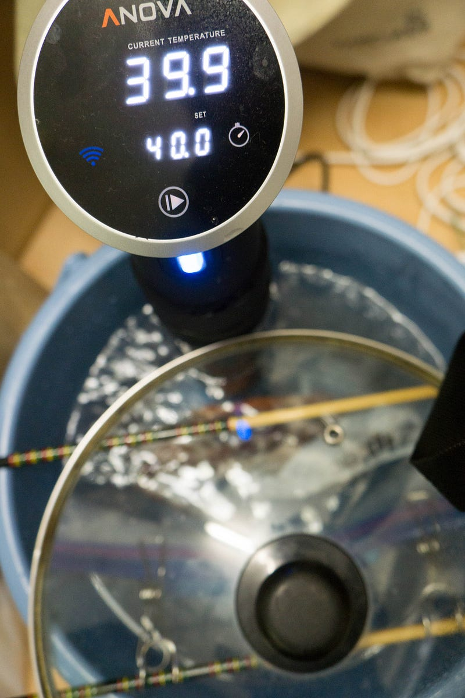
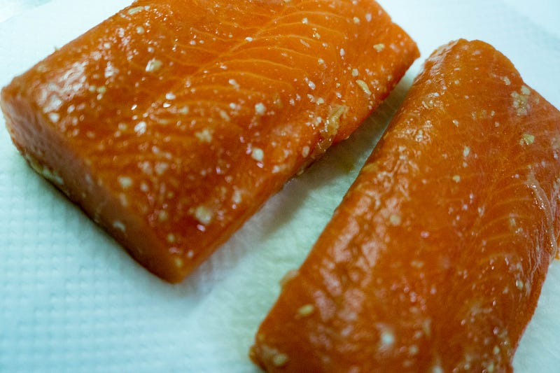
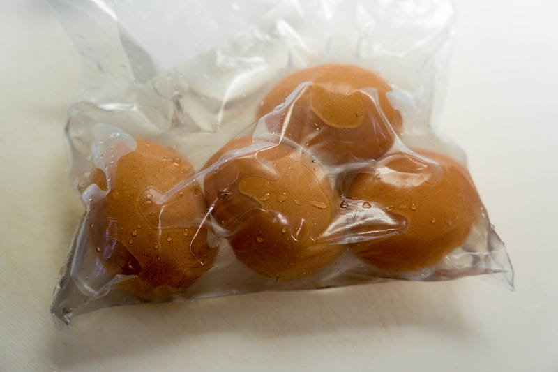
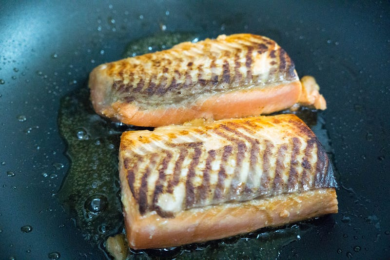
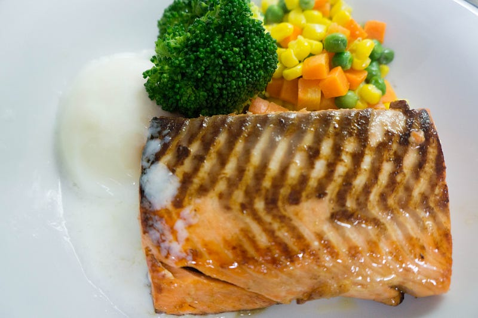

anovaで西京漬け的なもの（take 2）
anovaで西京漬け的なもの（take 2）
前回作った西京漬けは偶然要素が色々あったので、手法を確立すべくまた練習してみる。

前回はこちら
anovaでアトランティックサーモンの西京漬け的な何か
低温調理のステーキでは圧倒的な勝利を収めてきた (1) (2) ので、今度は魚に挑戦したい。刺身用のサーモンならいけるはずだ。medium.com
低温調理のステーキでは圧倒的な勝利を収めてきた (1) (2) ので、今度は魚に挑戦したい。刺身用のサーモンならいけるはずだ。medium.com
まず今回はタイミングがよかったのか、鮭のサクの種類が豊富だった。食感も考えて前回より厚めなのを購入。

ざくざくっと切る。

前回の反省を生かして気持ち水分を多くしてみた。だが、結果から言うともう少し強めに味噌を効かせる必要があったようだ。多分厚さのせい。

40℃40分。

取り出して見ると良い感じ。
今回はもう一つ作っておく。温泉卵。

袋に水が入っているのは、そうしないと卵が浮いてしまうから。他のなにかをくっつけてもいいんだけど、正直温泉卵作るなら水で充分。63.9℃で40分。

食べるタイミングになったら焼く。うまそう！

できあがり。温泉卵付き。
今回は厚さの分の計算が間違ってた。もう少し味つけを強くしておかないと駄目でしたな。味噌の風味はするんだけど、味まではしなかった。醤油で食べると刺身と焼き魚の中間みたいな感じで大変よろしい。そして卵とも合う。
次回は塩分の調整をちゃんとしたいと思う。